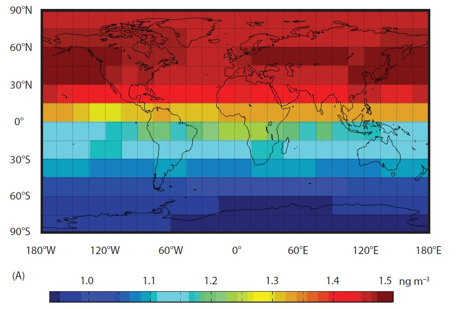
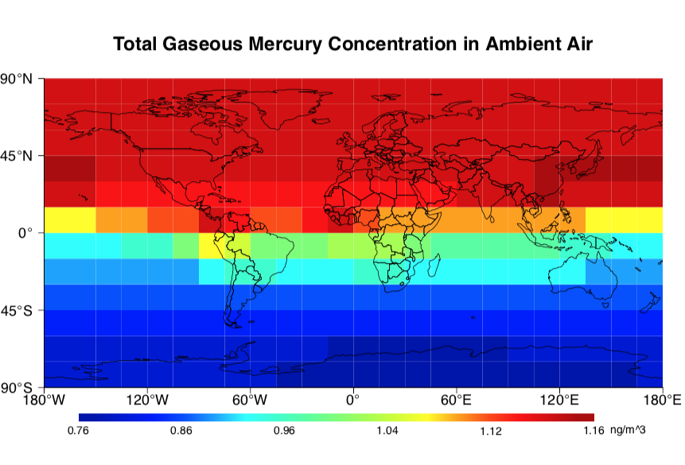
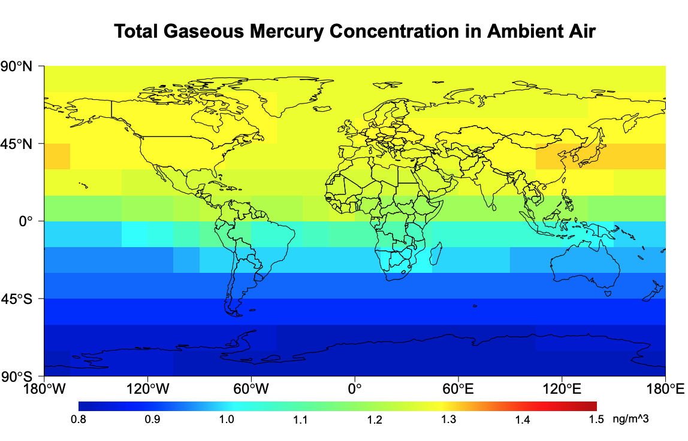
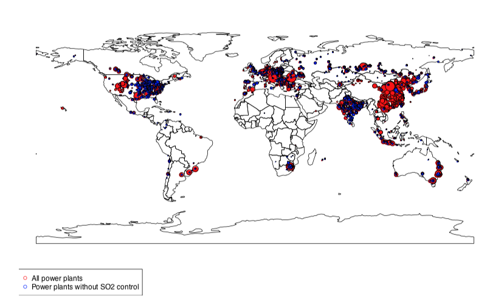
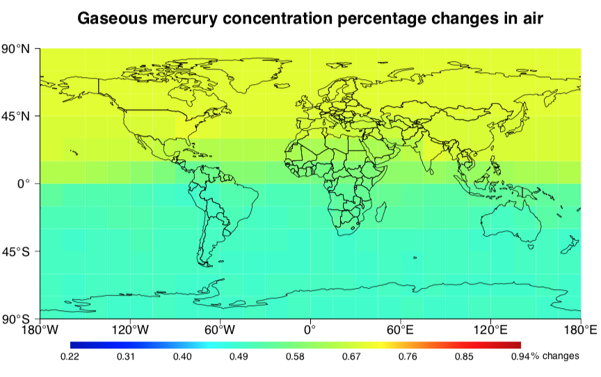
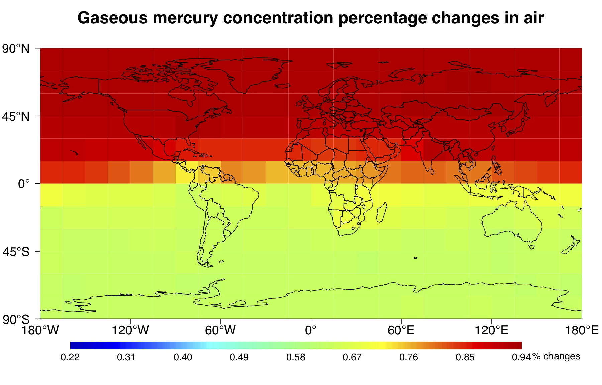

My Semester Project

Background information
Global warming is a well-sound alarm occupying the news everyday, before the corona hit us. The most relatable source of pollution or contribution for an average joe might be the black smoke coming out of the chimney from nearby power plant. Indeed, coal-fired power plant is one of the main contributor to emission of green house gases, but what is little know to many people is, it’s not only green house gases being emitted by power plant. Sometimes it also contains heavy metal pollutants,for example, mercury.
But from all the emission happened from global power plants, how much mercury emission happened every year? After they are emitted, how would they distribute globally? While, if it’s really bad, what can we do to reduce it? How well the effect of reduction be?
There has been some studies investigating in this question, but it’s still rather new. My thesis project was then focusing on answering those questions by 1) modelling the mercury emission 2) Calculating the mercury gaseous concentration distribution globally, 3) Purpose the mitigation strategy and model the effect after the mitigation strategy.
What is given?
Before starting the work, I used an existing model, developed by the lab that I worked for, to calculate global mercury emission. Another model which is co-developed in the lab for calculating gaseous mercury concentration distribution is used to calculate the global mercury concentration distribution.
Goal
- Model the mercury emission scenario.
- An emission calculation model was developed by Ecosystem Design Lab. I use this to calculate global mercury emission.
- Comparison by visualisation : I needed to reproduce a similar visualisation in R and compare it to original visualisation, without knowing what program or how the visualisation was generated in the reference.
- Propose mitigation strategy to reduce mercury pollution:
- Propose strategy on a global scale to reduce global mercury emission and concentraiton.
- Compare the result by visualisation
- Study the effect of mitigation strategy on a local scale
Result of the study
- Compare the produced visualisation with reference.
- Present the global and local change with the same visualisation scale.
- Discuss the pro and cons of visual comparison
1. Compare the reproduced visualization of data and graph
Plot from reference: 
Plot from me: 
The original plot is probabaly generated in MATLAB. I used R to best mimic the visualisation to help me compare how good is our computation method, compared to the reference.
From the general color representation, it could be seen that my visualisation was very close to the original one. Keep in mind that the computation method is also different. So it will result in actual different value in some cells.
2.1 Global change of mercury concentration after mitigation
This graphs shows what would mercury concentration in the air be if the emission we have is like in year 2000.

This graph shows, the scenario where some technologies are adapted to reduce the emission in 2010 and what would the mercury concentration in the air be in 2060.
Distribution of global power plants

2.2 Global mercury concentration change after upgrading
To reduce the mercury emission and resulting concentration in the air, two different methods are purposed to apply technology upgrade to a selection of power plants. The following graph display the results of this technology upgrade.
Both graphs display the percentage decrease of mercury concentration in the air.
The effect of using A technology 
The effect of using B technology 
3. Discussion of visualisation method
In this project, I mainly implemented the visualization scheme presented above. The aim is to compare the changes directly with the “same” color scale and unit in each graph. Since the original color scale was not clearly presented in the reference (see the first graph), I had to emulate the color scale as close as possible using R package. The advantage of using the same color scale is :
- Two graphs can be compared together directly. The numerical change is linearly mapped to color change.
- The consistency through out the project makes it easier to understand the changes in each scenario.
The disadvantages are:
- The color scale used here is not necesarily color blind friendly.
- Although the numerical changes are mapped to color changes, sometimes its not strong enough to produce or spot a color change.
What’s your opinion?
To have a view of full view of my work, visit my Github profile here: Link to my Github Master Project link
Shirzart Enwer
Environmental Engineer, Data Enthusiasit, Design Thinking Lover, Future Entrepreneur
My career interests lies in discovering knowledge from data and make contribution to greater good.